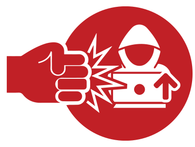
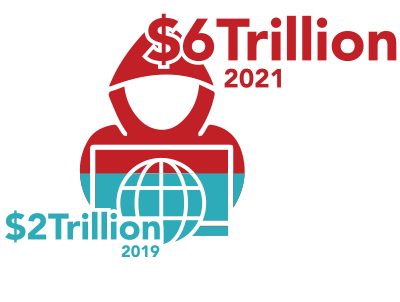
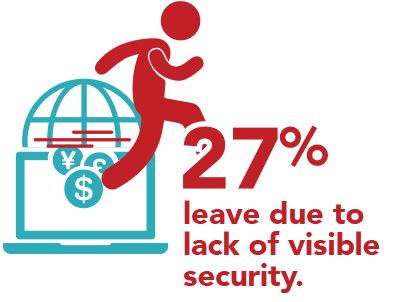
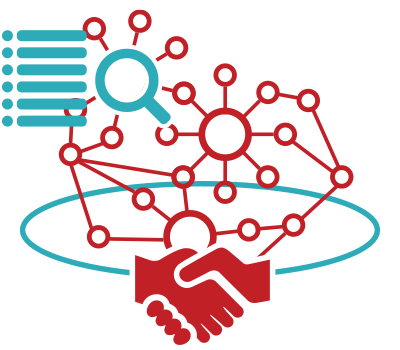

Combat the Rapid Rise of Fraud During COVID-19.
Published on April 7th, 2020.
Cybersecurity is more important now than ever.
Globally we are experiencing one of the worst pandemics of this century with COVID-19 impacting more than 150 countries and leaving many of them grinding to an absolute standstill. Across the globe people and businesses are working to curb the spread of the coronavirus by restricting their movements. Businesses and public-sector organisations are establishing “work from home” policies, social engagements are being confined to social posts, chat and video platforms and “at home” essentials are being ordered online verses in public stores. Our internet has instantly become our life-line for effective interaction, to support us on the products we require and our personal and work relationships.
Globally in Q1 2020, we have seen an increase in internet users of 22.3%. Total internet hits have surged to over 50%, and within Europe where self-isolation policies are at their peak, internet usage has spiked to reach 70% increase. Our online payment ecosystem in correlation has experienced an uptake where online sales increased by 52% compared with the same time frame a year ago, with an increase of 8.8% in online shoppers. Italy has seen a tremendous spike in online sales increasing by 90% and in the US mobile shopping has increased by 7.7%.
During these unprecedented times, Cybersecurity is of even more critical for the viability of online businesses, consumers digital identity protection and our global online infrastructure. Our rapid global growth of digitisation without the time to develop tailored defences is bringing new exposures and risks; opening digital fraudsters playground to strike. In a recent survey report performed by TransUnion 22% of Americans said they’ve been targeted by digital fraud related to COVID-19. Globally phishing attacks are accounting for more than 80% of the reported security incidents, and the UK National Fraud & Cyber Security Center has reported Coronavirus related fraud reports increased by 400% in March. Cybercriminals are exploiting the surge of new internet users and usage, the panic and discomfort the pandemic has brought to penetrate systemic defences.
Increased risk of business revenues lost to fraud and inability to process onboarding demands.

In 2019, cybercrime-related costs surpassed $2 trillion globally and expected to grow to $6 trillion by 2021; representing the most significant transfer of economic wealth in history. With the new online volumes, specific markets are experiencing businesses need to bolster their cybersecurity models instantly. If companies act immediately, cybercrime damage costs can be contained and kept at the current level.
However, this poses a few challenges for online entities and public-sector organisations that they need to overcome. For many businesses, they have not designed their KYC and fraud prevention hubs to handle the newly experienced volumes in internet users, unemployment benefit claims, service and platform sign-ups and eCommerce transactions. Many companies still rely on manual processes, making it challenging to verify identities and transactions through the pipeline in the most efficient, secure and compliant manner possible. Additionally, the impact of restricted human resources is making it challenging to train remote employees on how to detect and react to the new fraudulent activities witnessed by the Coronavirus pandemic.
There is a short window of time to implement additional KYC and cybersecurity measures into the customer journey. Along with automation and dynamic risk intelligence protocols to elevate the pressures businesses are currently experiencing and to remove the vulnerability from the rising illicit activity.
Gain a competitive edge with Cybersecurity.
In a recent report, 66% of customers have stated: “I like all the security protocols when I interact online because it makes me feel protected”. Furthermore, 27% of customers abandoned a transaction due to a lack of visible security. With our current online engagements, businesses need to maximise customers onboarding, retention and reduce any transactional drop-offs. In these uncertain times and consumers digital identity vulnerability, companies that manage to implement heightened KYC and fraud defence will gain further adoption, consumer trust and loyalty with their brand increasing in customer lifetime value and revenue retention.

Instantly Bolster Cybersecurity Through Orchestration Hubs.

 Follow us
Follow us